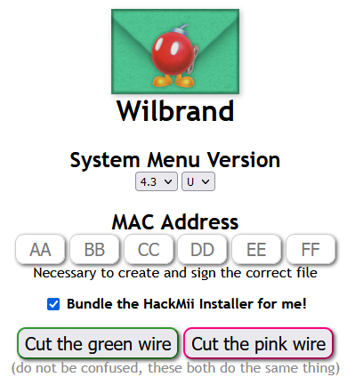

Wilbrand
Wilbrand is an exploit for the Wii which utilises the Wii message board.
Wilbrand supports versions as low as 3.0, so it is superior to letterbomb.
For this guide, you will need:
• A Wii
• An SD card formatted to FAT32
1. Visit Wii settings. Then proceed to internet, then console information. Write down your mac address.
2. Visit wilbrand.donut.eu.org
3. Enter your system version and region. Then input your mac address, which you wrote down earlier. Select "bundle the hackmii installer for me". Now, choose either "cut the green wire" or "cut the red wire".
4. Use 7Zip to extract the downloaded file to your SD card.
5. Insert your SD card into your Wii.
6. Go to the Wii message board and click the wilbrand message. You should now be in the hackmii installer. (If it does not appear, make sure your date and time is correct.)